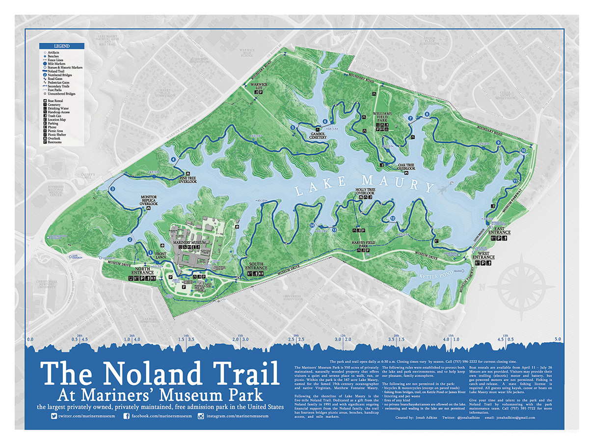

Background
Open Noland Trail is a product from the creation of the The Noland Trail Poster, the most comprehensive map available of the Noland Trail and surrounding Mariners' Museum Park area. The first edition poster was created in the spring of 2013 using GPS and classic survey techniques. A second edition was made in the spring of 2015, both versions user over 30 different elements (or layers) which have been made available as an open data source on this site, as well as GitHub.
